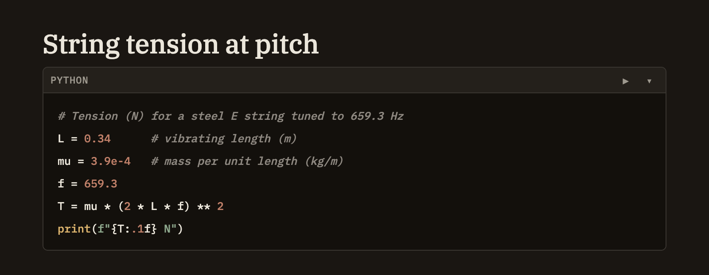

Docs/Notes/Code & compute cells
Code & compute cells
Drop a block of code into any note and it comes out neatly color-highlighted. Three kinds go further — queries over your knowledge base, queries over your tables, and Python — and become runnable: a small ▶ appears, and running the cell drops its result right into the note, just below the code.
Plain code vs. runnable cells
What decides whether a cell just looks nice or actually runs is the language you label it with.
Running a cell
A runnable cell shows a small ▶ button, whether you're writing the note or reading it in preview. You can run one a few ways:
- Click ▶ next to the cell. It shows a brief pause while the cell runs.
- ⌘⇧Enter (or CtrlShiftEnter) runs the cell your cursor is in.
- Recompute all, above the note, re-runs every runnable cell from top to bottom. It appears whenever a note has at least one.
Where output goes
A cell's result is written into the note itself, right below the cell — not a panel that vanishes when you close the note. Run the cell again and its result is refreshed in place. Depending on what the cell produces, the result might be a table, a block of text, an image, or a chart. If something goes wrong, you get a clearly-marked error with the message instead, so you can fix the cell and try again.

Very large tables are shown up to a generous limit. When there's more, the result notes how many rows you're seeing out of the total, so you always know there's more — just narrow your query to see the rest.
A note on Python
Python cells run on your own machine and can do real work — read and write files, reach the network, and use whatever you have installed. Because of that, Minerva asks you to confirm once per project before it runs Python; after that it remembers your choice. You can point Minerva at the Python you want to use in Settings → Compute.
Within a single note, Python cells build on each other: a value or import from an earlier cell is available to later ones. Cells in different notes stay separate, and each knowledge-base or table query stands on its own.
Running is always your call
A cell only ever runs when you run it — by clicking ▶, pressing the shortcut, or choosing Recompute all. Since you're the one asking, it just runs, the same way typing in a note doesn't need approval. Cells run the query you wrote exactly as written, so treat them with the same care you'd give any query you run yourself.